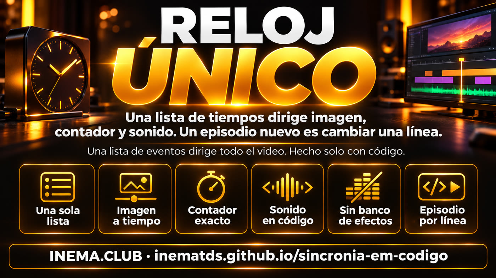

El sonido de tu video va a caer en el cuadro exacto de la imagen, sin ajustes a mano. Eso es lo que hace el Reloj único.
Quien hace video con código (o le pide a la IA que lo haga) pierde horas cuadrando sonido, contador y animación, y cada episodio nuevo empieza desde cero. Aquí una sola lista lo controla todo, y el siguiente episodio sale cambiando una línea.
En un video hecho con código, el problema más común es el desfase: el sonido llega un poco antes, el número en pantalla no coincide con la animación, y cada episodio nuevo obliga a tocar todo otra vez. Este kit junta tres ideas que lo resuelven: un reloj único (una lista de eventos con tiempo, que leen la imagen, el contador y el sonido), sonido hecho en código (golpes, crujidos y porrazos generados al momento, sin banco de efectos) y serie cambiando una línea (cada episodio es una copia de la plantilla en la que solo cambia un archivo). Incluye una demo lista en HyperFrames. Para usarlo: Node.js y ffmpeg.

Video
Entiéndelo en pocos minutos
El video que explica el kit aparecerá aquí en cuanto se publique.
Las 3 ideas
Tres ideas que te ahorran rehacer trabajo
Cada una resuelve un problema que aparece en todo video hecho con código.
1
Reloj único
El problema: la animación tiene un tiempo, el contador tiene otro, el sonido se pegó después, y nada coincide. La idea: una sola lista de eventos ("a los 3,2 s ocurre el golpe 14"). Todo lo que se mueve le pregunta a esa lista. Cambias un tiempo y cambian los tres juntos.
2
Sonido hecho en código
El problema: buscar el efecto de sonido, descargarlo, cortarlo, alinearlo, y el mismo sonido repetido 100 veces cansa. La idea: generar cada sonido al momento (ruido + filtro + envolvente), con pequeñas variaciones, y poner cada uno en el tiempo del evento. Sin descargas y sin licencia de efectos.
3
Serie cambiando una línea
El problema: cada video nuevo se vuelve un proyecto nuevo, y el canal pierde la cara de serie. La idea: una plantilla fija y una hoja de cálculo. Cada línea se vuelve un episodio: copia la plantilla y reescribe solo el archivo del episodio. El estilo visual y el ritmo quedan iguales.
Por qué "sin física en ejecución": si la animación depende de una simulación o de un sorteo sin semilla, cada render sale distinto y el sonido pierde su lugar. Aquí todo es función del tiempo y de una semilla, así que el mismo video sale idéntico cada vez, y cada episodio cambia solo la semilla. Cómo usarlo ↓
La demo
100 golpes: el reloj único funcionando
Cada golpe enciende una casilla de la cuadrícula en el mismo cuadro en que suena la madera. El tono sube con la cuenta y el sonido se mueve hacia el lado de la columna encendida. El contador y la barra leen la misma lista. (HyperFrames es una herramienta gratuita que convierte una página HTML en video, cuadro a cuadro: hace el papel de Remotion.)
0 s · cuadrícula apagada4 s · 13 golpes, 13 casillas10 s · el ritmo se acelera17 s · las 100 casillas y el cierre
Los episodios de ejemplo de la hoja de cálculo cambian el número de golpes, el color y la forma (25 círculos azules, 64 cuadrados verdes, 144 círculos rosas) sin tocar el código.
Parte técnica
El kit: para quien hace video con código
De aquí para abajo es la parte técnica: los archivos, los comandos y cómo llevar las piezas a tu proyecto. No necesitas esta parte para entender lo de arriba.
Qué es
Dos bibliotecas pequeñas, una herramienta de serie y una demo
JavaScript puro. El reloj funciona en el navegador y en Node, por eso la imagen y el sonido usan el mismo archivo.
Pieza
Qué hace
relogio/relogio.js
batidas() crea N eventos entre dos tiempos con un ritmo (constante, acelera, frena); relogio() responde contar(t), ultimo(t), proximo(t), fase(t), desde(t), entre(a, b); rng(semente) es el sorteo repetible.
som/sintese.mjs
Sonidos: batida (madera), fatia, estalo, baque, grao, molhado, plop. mixagem(duração).poe(som, t, dB, pan) pone cada uno en su tiempo; gravarWav y normalizar (−15 LUFS, con ffmpeg).
serie/serie.mjs
Lee episodios.csv, copia la plantilla a episodios/<data>-<slug>/ y escribe solo el episodio.js. Estados: pendente (pendiente) → fazendo (en proceso) → pronto (listo) → aprovado (aprobado) → publicado.
exemplo/
La demo "100 golpes" en HyperFrames: js/linha.js (la lista), js/tela.js (la imagen), ferramentas/som.mjs (el sonido), episodio.js (lo que cambia).
copiar-kit.mjs
Copia el reloj y el sonido a <seu projeto>/kit/ (HyperFrames solo ve archivos dentro de la carpeta del proyecto).
Cómo funciona
Una lista, tres lectores
La lista se arma una sola vez. La imagen pregunta "¿qué ya ocurrió en el tiempo t?" en cada cuadro; el sonido pregunta "¿cuándo ocurre cada evento?" una sola vez.
episodio.js→linha.js (la lista)→tela.js (imagen + contador)+som.mjs (un sonido por evento)→HyperFrames (MP4)
// js/linha.js de la demo (versión simplificada): la única fuente de tiempoimport { batidas, relogio } from'../kit/relogio.js';
export const R = relogio([
...batidas({ n: 100, de: 1.2, ate: 15.6, ritmo: 'acelera', tipo: 'batida' }),
{ t: 16.2, tipo: 'fim' },
]);
// en la imagen: R.contar(t, 'batida') → el número del contador// en el sonido: for (const e of R.eventos) mix.poe(batida(s), e.t, 0)
Requisitos previos
Qué necesitas tener instalado
Nada más. HyperFrames se usa con npx.
Node.js 22+ y git
Ejecuta el reloj, el sonido, la serie y HyperFrames.
En la raíz del repositorio. Toma el siguiente pendente de serie/episodios.csv, copia la demo y escribe el episodio.js con los campos de la línea y una semilla nueva.
cd ..
node serie/serie.mjs # lista los episodios# node serie/serie.mjs novo → sin nombre: el siguiente pendientenode serie/serie.mjs novo 25-circulos # o uno por nombre: crea episodios/<data>-25-circulos/cd episodios/*-25-circulos
node ferramentas/som.mjs
npx --yes hyperframes@0.9.37 render . -o renders/ep.mp4 --fps 30
3
Aprobar y marcar como publicado
Los estados quedan en el CSV. Solo tú marcas aprovado.
node serie/serie.mjs status 25-circulos aprovado
node serie/serie.mjs status 25-circulos publicado
4
Llevar el reloj y el sonido a tu proyecto
Copia las dos piezas a <seu projeto>/kit/. Después, en tu código, crea la lista con batidas() y relogio(), dibuja a partir de R.contar(t) / R.fase(t) y genera el sonido leyendo R.eventos.
node copiar-kit.mjs ../meu-video # la carpeta ../meu-video debe existir; crea kit/relogio.js y kit/sintese.mjs
5
Usar la serie con tu plantilla
En serie/serie.config.json, cambia molde por la carpeta de tu video y arquivo/constante por el nombre del archivo que cambia en cada episodio. Las columnas del CSV (menos slug y status) se vuelven los campos del episodio.